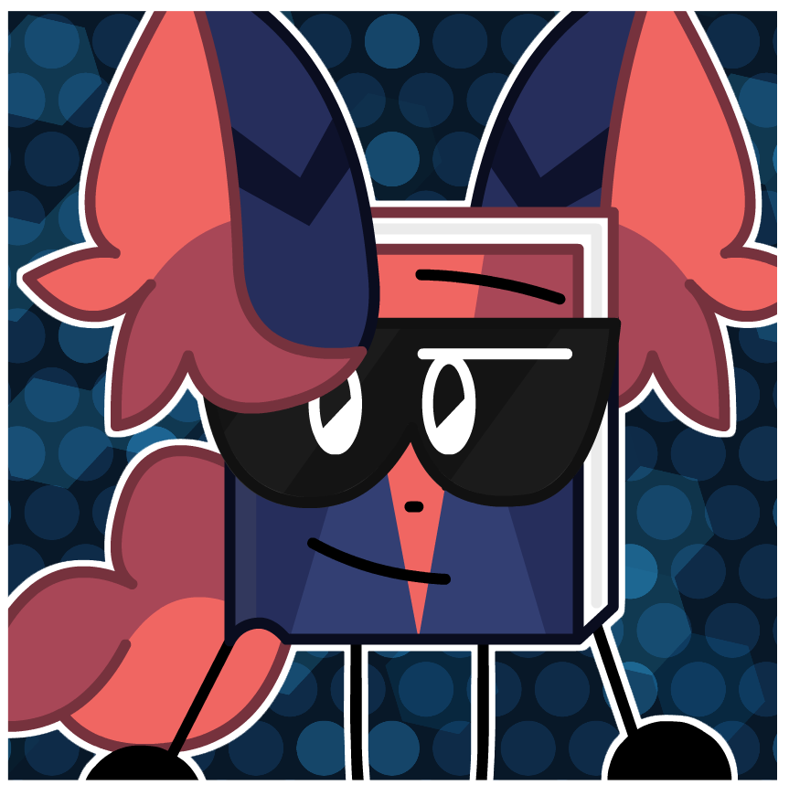

<!DOCTYPE html>
<html>
    <head>
        <meta charset="UTF-8">

        <!--CE stands for Cool's Encyclopedia-->
        <title>
            Raven - CE
        </title>

        <!-- Single theme link for swapping -->
        <link id="theme-link" rel="stylesheet" href="/css/light.css">

        <link rel="icon" type="image/png" href="./Data/ravenpixel.png">

        <meta property="og:title" content="Raven - C.E.">
        <meta property="og:description" content="Cool's Encyclopedia is a passion project that serves as an OC Wiki for Cool and Cool's friends.">
        <meta property="og:type" content="website">
        <meta property="og:url" content="https://coolboy7d.github.io/raven">
        <meta property="og:image" content="https://coolboy7d.github.io/Data/ravenpixel.png">

    </head>

    <body>
        <!--Offset from left of page (this sucked to program btw)-->
        <aside style=
        "width: 95%; 
        padding-left: 15px; 
        margin-left: 15px; 
        float: right;">

        <!--Top of page: Title-->
        <!--
            Apply CSS to make the titlebox:
            As wide as can be without touching the image
            Border is red and thick and has rounded corners
            Inside is red asf
            Text color is indigo
            Whole thing is meant to use Raven's color palette :>
        -->
        <h1 style=
        "border: 4px solid darkred;
        background-color: red;
        color: indigo;
        border-radius: 40px;
        text-align: center;
        box-shadow: 5px 5px darkred;">
            Raven
        </h1>

        <!--Raven image-->
        <!--
            Apply CSS to make the image:
            Off to the right of the page
        -->
        <aside style=
        "width: 50%; 
        padding-left: 15px; 
        margin-left: 15px; 
        float: right;">
            
        <!--Under image-->
            <br>
            <small>
                Raven as shown in his Reveal Art. (Drawn by Neon) <br><br>
            </small>
            <!--
                Apply CSS to make the infobox:
                Black border with rounded edges
                Background gray
                Width the size of the image
                Align text in center
            -->
            <p style=
            "background-color: beige;
            border-radius: 15px;
            width: 490px;
            text-align: center;
            color: black;">
                <!--Name-->
                    Raven<br>
                <!--Pronouns-->
                    He/Him<br>
                <!--Index-->
                #02<br><a href="./keymaster">(-- Back</a> <a href="./pastel">Next --)</a><br>
                <!--Defining Trait-->
                    Defining Trait: Programming<br>
                <!--Notes-->
                <b>
                    Notes:<br>
                </b>
                <small style="color:black;">
                    Raven is the first book OC Cool made.<br>
                    His visor gives him special powers.
                </small>
            </p>
        </aside>

        <!--Top of page: Quote-->
        <h5 style=
        "width: 40%;
        border-radius: 5%;
        border-top: 2px solid;
        border-bottom: 2px solid;">
            "Well. I'm here now.<br>
            Meet Raven!<br>
            He/Him<br>
            <small>
                (Neon helped me with this one!)
            </small>
            Raven has coding capabilities, and is able to use his skills to alter his environment! He isn't quite an expert yet, so he can't quite warp
            reality or anything like that, but he is skillful enough to alter little things around him. His visor helps him focus enough to do his thing,
            and it has some HUDs that help him know what certain things around him correspond to in code." <br>
            <small><b>- Cool, Raven Reveal</b></small>
        </h5>

        <!--Top of page: Home Hyperlink-->
        <h3>
            <a href="./">Back to home</a>
        </h3>

        <!--Top of page: Infoboxes (Page Warnings)-->

        <!--Missing images-->
        <!--
            Apply CSS to make the Infobox:
            Red asf
            Border is black and has rounded corners
            Width is as wide as can be without touching the image
            Tall-ish
        -->
        <p style=
        "width: fit-content;
        border-radius: 15px;
        text-align: center;
        font-size: large;
        background-color: crimson;color:black;">

            <br><b style="text-shadow: 1px 1px;">This page is missing images.</b><br><br>

            <small style="color: black;">Missing images: Moadeas' art of Raven, and Neon's pixel art of Raven.<br><br></small>
        </p>
        <!--Missing content-->
        <p style=
        "width: fit-content;
        border-radius: 15px;
        text-align: center;
        font-size: large;
        background-color: crimson;color:black;">

            <br><b style="text-shadow: 1px 1px;">This page is missing content.</b><br><br>

            <small style="color: black;">Missing content: Table of Contents, Lore, Camp Lore, Gallery, etc.<br><br></small>
        </p>


        <!--Top of page: Table of Contents-->

        <p style="border:2px solid;
        box-shadow:none;
        font-size: x-large; 
        text-align: center;
        width:40%;">
        <br>Table of Contents:<br><br>
            <small> 
                <a href="#desc">Official Description</a><br><br>
                <a href="#lore">Lore</a><br>
                <br></small>
        </p>

        <!--Middle of page: Official Description-->

            <p id="desc" style="font-size: x-large;border:none;box-shadow:none;"><b>Official Description:</b></p>
            <p style="width: 45%; border-top: 2px solid; border-radius: 100%; box-shadow: none;"></p>
            Raven is a male book object who is absolutely in <em>love</em> with programming. He spends all his free time doing programming, his <em>job</em>
            is programming...<br>
            He also lives in an apartment with <a href="./pastel">Pastel</a>. His job as a programmer allows him to have enough money to pay his half
            of the rent as well as go shopping each week for him and <a href="./pastel">Pastel</a>.<br>
            Raven's <a href="./abilities">Ability</a> is that he can alter specific parts of his environment using his visor. Not reality breaking
            stuff, (at least not <em>yet</em>), but he can do basic things like alter the gravity in a small radius around himself. Think about this
            <a href="./abilities">Ability</a> like he can tweak some lines of code of his environment.<br><br>

        <!--Middle of page: Lore-->

            <p id="lore" style="font-size: x-large;border:none;box-shadow: none;"><b>Lore</b></p>
            <p style=
            "border-top: 2px solid;
            width:45%;
            border-radius: 100%;
            box-shadow: none;">
            </p>
            Raven did not always have his visor, and thus his <a href="./abilities">Ability</a>. One evening, <a href="./pastel">Pastel</a> and Raven were out
            on a mountain climb, when Raven <em>fell</em>, bashing himself up a bit. When he was brought to the hospital, he was found mostly unharmed, with the
            exception of the fact that he'd lost his <a href="https://wikipedia.org/wiki/Spatial_ability">spatial awareness</a> and needed an augment to his person
            in order to somewhat gain that ability back. Though, with the amount of coding knowledge Raven had, he seemed to get more out of the visor than anybody
            else had gotten during testing.<br><br>

                    <!--Keep these at very bottom-->
                    <br>
                    <!-- Dark mode toggle button -->
                    <button id="dark-toggle" type="button" style="width: fit-content; height: fit-content;" onclick="toggleDarkMode()">
                        Toggle Dark Mode
                    </button>
                
                    <br><br>
                    <b><small><small>
                        Update convention: major.minor.patch(stage of dev)<br>
                        Site Version: <div id="text-container">Loading...</div>
                    </small></small></b>
                
                    <!-- Dark mode JS -->
                    <script src="./darkmode.js"></script>
                    <!-- Version number JS -->
                    <script src="./script.js"></script>
        </aside>
    </body>
</html>